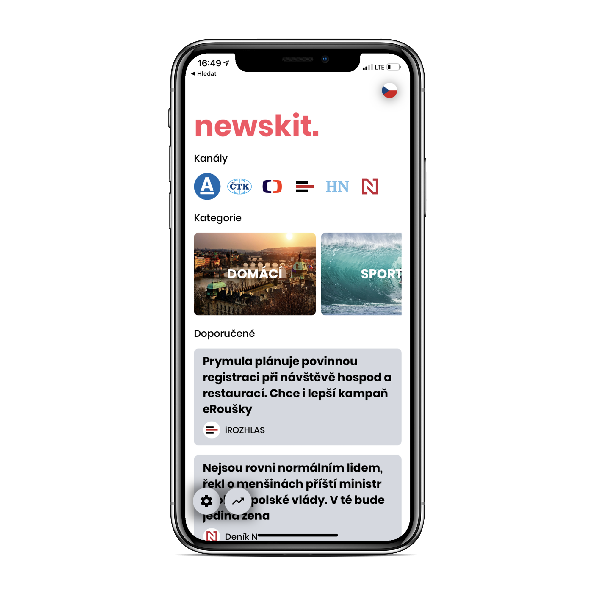

 newskit.
newskit.
Ty nejlepší zprávy z důvěryhodných čeksých zdrojů na jednom místě, roztříděny podle kanálu či kategorie. Aplikace navíc vybírá takové zprávy, které se budou líbit spíše Vám. Také nabízí statistiky, chytrý přehled Vaší interakce se zprávami.
Více informací